Lokman Slim’s war: The life and mysterious death of a Western collaborator in Lebanon
On February 4, a Lebanese employee of foreign embassies and NGOs was murdered in the southern Lebanese village of Addousiyeh.Few Lebanese people had heard of the 58-year-old socialite who had made his living in recent years by informing on his own community.
But the Western diplomatic and NGO community reacted in horror and grief, as did the small clique of Lebanese citizens who worked with them.The kidnapping and assassination of Lokman Slim on a dark and lonely road attracted substantial Western media attention as well.His death was immediately politicized, with Slim portrayed as a martyr slain for his criticism of Lebanese Hezbollah.
But Slim was not merely an opponent of the militant populist Shia group known as Hezbollah.He collaborated with Western governments to construct a network of informants that collected information on Lebanese Shias in hopes of adding them to sanctions lists.He was a belligerent elitist who sneered at the lower classes of his sect, even advocating for Israel to massacre them.In one speech, he openly declared, 'Shias today need a Nakba to wake up.'And as dozens of State Department cables published by Wikileaks demonstrate, Slim worked with an array of US government cutouts to help undermine his country’s sovereignty and immiserate its population.
Did his political activities lead to his demise?
Lokman Slim was shaped by his upper-class right-wing upbringing, influenced by former French leftists turned imperialist intellectuals, and closely allied with ex-leftist Lebanese operators enticed into imperialist, pro-Israel positions by Saudi and US sponsorship.Over time, he began to participate in the intelligence wars of the Middle East.
In reporting this article, The Grayzone interviewed over a dozen acquaintances and former colleagues of Slim, who all requested anonymity to avoid clashes with his former donors as well as the social media and personal backlash they would inevitably face.The Grayzone also spoke to several regional security officials and diplomats who were familiar with his activities and the right-wing political networks he traveled in.
Given how vociferous Slim was in expressing his views, including his frequent rants calling for the mass murder of Shias, obtaining information about him from personal and professional acquaintances was not terribly challenging.
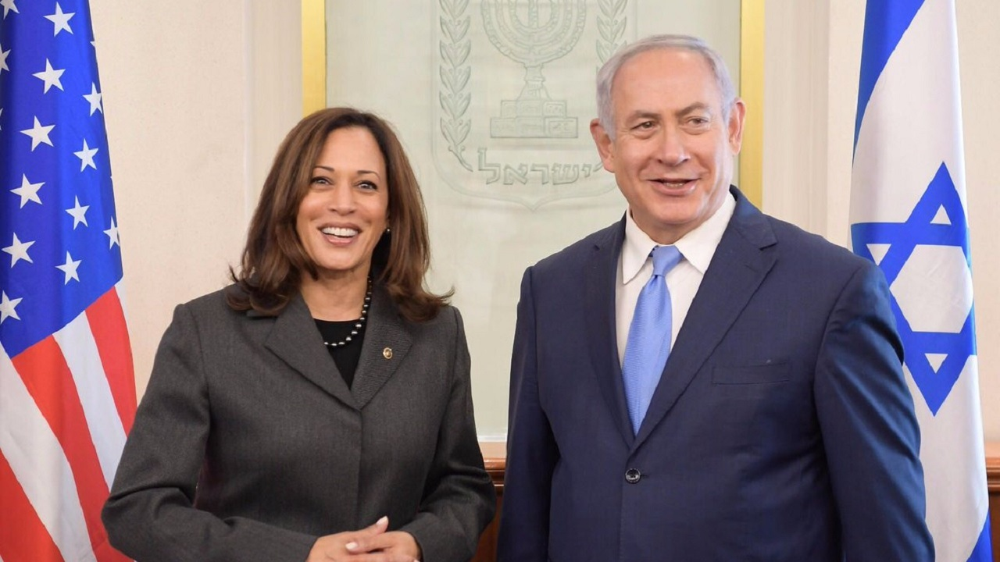
Following Lokman Slim’s slaying, his old friend, David Schenker, who had served as Trump’s Assistant Secretary of State for Near East Affairs, reflexively blamed Hezbollah for the crime: 'RIP my friend Lokman.Hezbollah threatened you, but while they tried, they never intimidated you.They ultimately took your life, but they will not take your voice or your message: Lebanon is for the Lebanese – it is up to you to save your country.'Schenker had met regularly with Slim when he visited Lebanon.
Pro-war members of the Beltway think tank complex such as Charles Lister, a Gulf-backed pseudo-expert who supports virtually every imperialist adventure waged by the US and UK, tied Slim’s killing to Iran and used it as a pretext to argue against reducing pressure on Iran, all while claiming just a few hours after the unclaimed murder, that 'it’s not hard to know where to lay the blame.'
Joel Rayburn, Trump’s uber-hawkish Special Envoy for Syria and Deputy Assistant Secretary of State for Levant Affairs – an advocate of collapsing Lebanon if it meant harming Hezbollah – had somebody compose a tweet for him in Arabic offering his condolences for 'our dear Lokman Slim.'
'He was a brave leader,' Rayburn declared, 'with his ideas, not with militias, and therefore he can never be defeated.His enemies do not know until now that they have already lost.They cannot stop his vision of a Lebanon free for all Lebanese children.His vision will live long after his enemies turn to dust.'
Eulogies from friends like these provided damning testimony of Slim’s record.His death exposed just how central he was to the networks of Western officials and affiliated think tanks dedicated to shattering Lebanese sovereignty.
Hanin Ghaddar, a fellow at the pro-Israel Washington Institute for Near East Policy (WINEP) and a native of Lebanon who has devoted her career to lobbying against Hezbollah, immediately blamed her favorite target for Slim’s death.What’s more, Ghaddar used the killing as an opportunity to advocate for the US to further strangle Lebanon in the midst of a devastating economic collapse.
'Anti-corruption and terrorism sanctions should not stop but rather pick up pace and target a wider range of corrupt political figures from all sects and parties,' she wrote.
Danielle Pletka and Michael Rubin of the neoconservative American Enterprise Institute, known 'as the intellectual command post of the neoconservative campaign for regime change in Iraq,' called Lokman Slim 'kryptonite to Lebanese Hezbollah.'
'What was once the Paris of the Middle East has become a snuff film of a country, every hero meeting his death at the hands of the true powers that reign in Beirut,' they wrote.
Hezbollah denied any involvement in Slim’s death, condemned his killing and denounced attempts by Western ambassadors to politicize his slaying.When the German, Swiss and US ambassadors showed up at Slim’s funeral at his home in Dahiyeh, their presence only served to confirm to observers that he was indeed working closely with Western embassies.
The German ambassador to Lebanon remembered Slim as a 'fearless critical intellectual and activist for peace and reconciliation.'
US ambassador Dorothy Shea, who also spoke at Lokman Slim’s funeral, blamed Hezbollah without explicitly naming them.She called his assassination 'a cowardly attack on the principles of democracy, freedom of expression and civic participation,' 'an attack on Lebanon itself' and an attempt to 'silence political discourse,' even though it is not yet known who killed him or why.Video of her failing to properly recite a simple Arabic phrase at his funeral circulated on WhatsApp among Lebanese social media users.
Video evidence of #WhiteManJan Dorothy Shea's laughable Arabic skills pic.twitter.com/gtKdXLlAAf — Jamal Ghosn (@jamalghosn) February 11, 2021
The Western portrayal of Slim as a peace-loving activist was as false as the notion that Hezbollah silences dissent.At least half of Lebanon’s political class openly opposes Hezbollah, and makes their enmity known on a privatized media apparatus of satellite news channels funded by anti-Hezbollah oligarchs and Gulf states.On the largest outlets in Lebanon, such as MTV and Al Jadeed, vitriolic anti-Hezbollah screeds calling for disarming the group are the norm.People like MTV’s Dima Sadek have made their careers as anti-Hezbollah agitators, there’s a lucrative industry around it.
So why all the misrepresentations?Why has his death been politicized?And who killed him?Perhaps the best clues lie in the story of Slim’s path from scion of an elite Shia clan to his role as the central node in a right-wing informant network nurtured by Western governments.
Lokman Slim was born in 1962 into a family typical of the Shia notables and aristocrats that resided in enclaves such as Ghbeiri, Shayah and Haret Hreik.These little villages dotted with villas filled up with a middle class closely linked politically to right-wing Christian organizations in Lebanon.Following waves of migration in the 1970s and 80s, these areas were absorbed into the urban southern suburbs of Beirut.
Slim’s father, Mohsen, was a lawyer and member of parliament affiliated with the right-leaning National Bloc of Raymond Edde.He was also linked with Camille Chamoun, the former president of Lebanon, betraying his own party to cooperate in the elections with the Christian candidate.In 1982, Moshen crossed the front lines of the Lebanese civil war and met with Bashir Gemayel, encouraging him to go all out in his fight against the Palestinians and Syrians.Gemayel was commander of the powerful, far-right Phalange militia, which committed the most gruesome documented massacres of the Lebanese civil war while collaborating with the Israelis.The most notorious of the Phalange’s atrocities was the slaughter of hundreds of unarmed Palestinian men, women and children in the Sabra and Shatila refugee camps following Gemayel’s assassination.
When Bashir Gemayel heard Mohsen Slim’s rhetoric, he was pleasantly surprised that it was more anti-Palestinian than Chamoun’s and the Christian Right of Lebanon.He later commented with surprise that Mohsen’s positions were tougher than his own.
Shia notables like Mohsen Slim resented the rise of political Shiism, of the left, and of Palestinians.They sought out a partnership with the right-wing Maronite Christians, hoping to achieve their elite status.He allied himself with Muhamad Ali al Ajami, the brother of noted Lebanese American academic Fuad Ajami, who eventually became the muse of beltway neocons.Hailing from a wealthy family from the southern city of Tyre, Muhamad Ali worked directly for the Israelis and assisted their invasion of Lebanon.He was wanted in Lebanon and fled to London during the 1980’s where he continued to play a role in intelligence intrigues.
Aristocratic Shias like Mohsen also resented the poorer Shias who fled to their suburbs from the south and the Bekaa valley due to Israeli aggression.They viewed the new arrivals as riff-raff from the lower class, and sympathized instead with Lebanon’s far right Maronite Christians and their militias.
According to an academic and former friend of Lokman Slim, his father, Mohsen, opened a diplomatic channel between the Shah of Iran and the Lebanese Front, a right-wing Christian coalition that included the Phalange.The writer added that 'within two years of the civil war ending, his (Slim’s) left-wing organization had become a gateway for many to elite academic and cultural positions that concealed their political non-alignment with a loose-fitting language and an ambiguous relationship with their committed past – and sometimes a gateway to the far right.'
Slim briefly rebelled against his father in 1979, forging friendships with Marxist types from the Arab Socialist Action Party, which was linked to the Popular Front for the Liberation of Palestine.Over the course of the next two years, he became close to Wadah Charara, an intellectual leader of the new left in Lebanon.
The Israeli invasion of 1982 was a turning point for Charara and cohorts such as Hazem Saghieh, who now writes a column for the the Saudi-funded paper Asharq Al-Awsat.The two radicals saw the Israeli invasion not merely as a military setback, but as the defeat of the entire idea of a revolutionary project to transform the reality of Lebanon and the Middle East.They blamed the Arabs for their failure to contain Israeli aggression, insisting they were trapped in a backwards culture that had doomed them to endless civil war, and which led them to blame outsiders for internal problems.Like many of their neoconservative counterparts in the US, as well as many former leftists in the Arab world, they transitioned from communism to liberalism.For Slim, these ideological shapeshifters became role models.
Saghieh and Charara were among the first Arab intellectuals to promote a liberalism that was unapologetically pro-Western and pro-Israel.For them, the real enemy of the Arabs was not to be found among imperialist foreign powers, but within the currents of revolutionary nationalism that dominated regional left-wing politics at the time.For this clique of former leftists, the shattering of religious taboos such as drinking alcohol was an end in itself, as we will see later with Lokman and his awe-struck Western admirers.
Saghieh, for his part, found a niche writing punchy op-eds for the Saudi royal family-owned Al-Hayat from the 1990’s until the paper’s recent demise.He also edited a weekly supplement for Al-Hayat in which Wadah Charara and other former Marxists-turned-imperialists and Zionist apologists published their opinions.His favorite target was the Palestinian scholar Edward Said; he trashed his famed probe of colonialist discourse, Orientalism, in a book entitled, 'The Cultures of Khomeinyism.'Following the dissolution of Al-Hayat, Saghieh signed up to write at the more explicitly pro-Israel and imperialist Saudi royal family-owned newspaper, Al-Sharq Al-Awsat, where he recently equated the Iranian government with ISIS.
Joseph Massad, the Professor of Modern Arab Politics and Intellectual History at Columbia University, explained to The Grayzone, 'Saghieh has fostered a major following among the new generation of Arabs who joined or want to join the ranks of the business world and the NGOs, and who have adopted pro-American liberal politics and neoliberal economics after growing enamored of the US following the fall of the USSR.Until 2005, he was opposed by the more anti-imperialist liberals and leftists in Lebanon because of his staunch pro-US and pro-Israeli views.However, after the assassination of [former Lebanese Prime Minister Rafic] Hariri that year and the anti-Syrian vitriol that almost the entire Lebanese intellectual class began to spew, with the major exception of the newspaper Al-Akhbar and its contributors, they all became part of the same group with much fewer distinctions amongst them.'
In London, Saghieh launched an Arabic bookstore called Al-Saqi with his wife, the late Trotskist-turned-liberal artist and author Mai Ghoussoub, and Kanan Makiya, a self-styled Iraqi dissident who has been trotted out in Western media whenever the US was on the verge of invading Iraq to badger anti-war Western intellectuals into silence and justify America’s war on his former country.
As’ad AbuKhalil, a professor of political science at California State University and scholar of Lebanese politics, placed Charara and Saghieh within the framework of a wider regional phenomenon.
'The media market of the Arab world tightened after 1991 when Iraq disappeared from the scene as a sponsor of various Arabic media outlets, and Qaddafi also gradually ended his funding of media outlets,' said AbuKhalil.'This gave the Saudi and UAE regime almost complete control of the Arab media market.Miraculously, this trend coincided with people shifting their political positions from the left or Arab nationalism to advocacy for the Saudi regime and its agenda.Some of those Lebanese former leftists and former Arab nationalists specialized in praising the Saudi regime while others like Saghieh and Charara specialized in attacking enemies of the Saudi regime.'
According to AbuKhalil, the Saudi-oriented former Lebanese Prime Minister Rafic Hariri and his son, Saad, also played an important role in incentivizing the transition of Sunni leftists to right-wing, pro-Western positions.'Most of those ex-leftists are now writing for right-wing or Gulf regime media,' he said.
The utter absurdity of BHL who has to stand on tiptoes to make his sorry ass look taller than the Kurdish people he is getting himself photographed with: pic.twitter.com/3sq5KT609I — Laleh Khalili (@LalehKhalili) August 19, 2020
Whether they knew it or not, former Arab leftists who lurched suddenly to the right were influenced by a cadre of anti-Marxist philosophers from France who traveled a remarkably similar journey.Known as the 'New Philosophers,' the French clique grew its wings in the 1968 social upheavals of Europe and wound up as the court intellectuals of the centrist EU establishment following the collapse of the USSR and rise of a unipolar American hegemon.Like their Arab counterparts, they specialized in attacking the socialist and anti-imperialist intellectuals that remained in their midst.Though they decorated their homes with books as accessories to lend themselves intellectual gravity, it was hard to tell how much these bloviating Frenchmen had actually read.
Bernard-Henri Lévy (BHL), André Glucksmann, Alain Finkielkraut and Pascal Bruckner are a few of the most prominent French philosophers to turn on the radical left.BHL has spent several decades as a vocal supporter of Israeli military assaults and US humanitarian interventions, while Glucksmann was a former Marxist turned critic of the Soviet Union.He would compare Nazism to communism and assert that communism inevitably led to dictatorship.Like BHL, he offered fervent support to US military interventions and proxy wars from Nicaragua to the former Yugoslavia to Afghanistan and Iraq.
As Libya descended into chaos in 2015, BHL was asked why he took such an active role in lobbying for NATO’s regime change war on the country.'Why?I don’t know!Of course, it was human rights, for a massacre to be prevented, and blah blah blah,' he responded.
Finkielkraut’s work on preserving memory likely influenced Lokman Slim’s work on the Lebanese civil war.A Zionist obsessed with the specter of anti-Semitism, Finkielkraut nonetheless managed to promote Croatia’s Franjo Tudjman, the sectariain warlord who inherited the Ustase party and its pro-Nazi legacy, against the Serbs.He also spouted racist tirades against migrants and Muslims in France, complaining once that the French national soccer team was 'black-black-black, which arouses ridicule throughout Europe.'
Bruckner was also a New Philosopher who argued in favor of American military interventions in the Balkans and Muslim world.Playing upon the famous Rudyard Kipling poem, 'The White Man’s Burden,' he wrote a book entitled 'The White Man’s Tears,' in which he heaped scorn on the anti-Western and pro-Third World positions of leftists.Like many former leftists triggered by September 11 and other calamitous incidents, Bruckner romanticized imperialism and defended Islamophobia as a natural response to Muslim immigration.
These former Marxists were particularly shocked by the flight of Vietnamese refugees after the end of the failed US war and the victory of North Vietnam.And they were horrified by the rise of the Khmer Rouge in Cambodia.They no longer saw a difference between communism and Nazism, arguing that both were inherently fascist and that revolutionary disruptions could only lead to genocide.
The Maoist passions of their youth had dissolved into guilt and rage against the left.While composing denunciations of their former selves, they swore their dedication to the project of spreading Western liberal democracy.Like their neoconservative fellow travelers in the US, they viewed history through the prism of a civilizational conflict between democracy and totalitarianism, and advocated defending the former with the full force of the US military.
This was the beginning of an ideological counterrevolution against Third Worldism and what it had achieved in the West and the Arab world.It contained echoes in the work of the Trinidadian writer VS Naipaul, whose novels were packed with hostile diatribes against the Third World, and that of the Peruvian former Marxist Mario Vargas Llosa, who had once been a backer of the Cuban revolution and became a neoliberal politician.A similar trend emerged in the post-9/11-era US, prompting former leftists like Christopher Hitchens and Paul Berman to join up with the neoconservative movement galvanized by George W. Bush’s 'war on terror.'
Slim, for his part, was posthumously described by the UN Office of the High Commissioner for Human Rights as a 'well-known intellectual' despite the complete absence of any intellectual output.He left behind a few articles, a couple of chapters in French collections of little significance and several interviews and speeches.It was Slim’s gift for speaking Arabic in a flowery style and English in the manner of public philosophers that impressed diplomats and Western women.To the extent his intellectual background existed at all, it was situated firmly within the context of the New Philosophers and the Lebanese they influenced.
People like Lokman Slim believed that to achieve progress, they had to liberate themselves from the prevailing ideologies of the past —Islamism, Arab nationalism, communism — and align with the arc of Western-driven globalization.'The Shia want to be a respected partner in the globalization of the world,' Slim told the neoconservative writer Michael Totten.'I can’t accept that the shitty island of Cyprus is part of the European Union and we, just a few miles away, are ostracized.'
For figures like him, Palestine was not an occupied land; it was the ultimate symbol of a bygone era and failed struggle.Slim’s clique argued that the left was justifying totalitarianism in the name of liberating Palestine.And they came to see Israel as a symbol of innovation, a Silicon Valley of the Middle East where the future was being designed.In their minds, reaching out to Israel meant more than forging an alliance against Hezbollah or Iran; it was laying the foundation for progress.
While Slim posed as an iconoclast, he insisted on marketing himself by his sectarian identity.He sent his patrons the message that he was the good Shia, and Hezbollah were the bad ones.The scion of a feudal family inhabiting a mansion in the poor suburbs, he viewed himself as a prince surrounded by the unclean and ignorant lower class.
Somehow, French leftists who would have rejected Slim’s views in France sympathized with him in Lebanon, where left and right scarcely exist.Indeed, many Western liberal visitors who reject the right-wing at home have developed a special affinity for secular English or French-speaking fascists from the Lebanese Forces, or opponents of the poor and supporters of imperialism like Slim, when they drop into Lebanon.Unlike the unwashed Shia masses, these smooth-talking characters drink alcohol, throw delightful parties ,and hail from cosmopolitan backgrounds.
Following Slim’s killing, liberal bastions of the French academic left issued a statement celebrating him as a 'man of culture and commitment' who 'occupied a prominent place in Lebanese cultural life.'They fretted, 'this assassination raises fears of a new cycle of violence targeting intellectuals' and praised 'his uncompromising love of Lebanon' – unaware that Slim had regularly called for his country to be bombed.
When Slim returned to Lebanon from his studies at the Sorbonne in Paris in 1988, he settled in the family estate at the entrance to the burgeoning southern Beirut suburb known as Dahiyeh.During parties he hosted at his home throughout the 1990s, or at festive gatherings around Beirut, he became notorious for openly wishing that Dahiyeh would be attacked with ten car bombs a day, arguing that an Israeli takeover of the country was better than Hezbollah’s current presence, according to several frequent guests at his gatherings who spoke to The Grayzone under condition of anonymity.A heavy drinker, he became well known for his inebriated rants against the Shia armed group and the mass movement behind it.
Along with his praise for Israel, the country that had been waging brutal wars against the population of southern Lebanon, attacking the Bekaa and Beirut, displacing hundreds of thousands of civilians, killing tens of thousands more, and traumatizing millions, Slim embraced the most extreme of US neoconservatives.Slim, Hazem Saghieh and other cohorts did not look to liberals in the West for inspiration, but instead to the likes of Niall Ferguson, the self-described 'neo-imperialist' who defended colonialism as a force for good.
Slim and his clique were united by a conviction that enlightened elites like themselves should rule, just as Lebanese Forces founder Bashir Gemayal had believed.Gemayel’s father had been inspired by the Hitler youth to form his Phalange party, but since the Nazis were not Catholic enough, he preferred the more Christianist fascists of Italy and Spain.Slim should be placed in this line of Lebanese thinking.And indeed, some of his former acquaintances told The Grayzone he frequently kept company with Eli Khoury, the Lebanese Zionist who once declared, 'We have to be a little bit neocon here in Lebanon.Otherwise we cannot survive.'
Not to be confused with the Lebanese writer Elias Khoury, Eli Khoury was the media and public relations maestro who set up the NOW Lebanon website and collaborated with the Bush administration to promote the blood-soaked project it marketed as 'the birth pangs of a new Middle East.'
'Block off the Shia areas,' Eli Khoury urged in an interview with fellow neocon Michael Totten.'Surround them utterly with international troops, like from NATO.NATO can do this if Israel stands aside… 80 percent of Lebanon would accept this if it’s done right, with government and international approval, and if Israel, at the same time, resolves the outstanding issues.'
In the Hollywood crime thriller, The Town, Ben Affleck’s character asks, 'What do you call a guy who grows up with a group of people and gets to know all their intimate secrets, the stories of their lives, ‘cause they trust them, and then turns around and use those secrets against them to put those people in prison?You call him a rat, right?'
This is an apt description for the Lebanese citizens and their Syrian counterparts who routinely appeal for American help to bombard, sanction and utterly destroy their countries.
Following the US invasion of Iraq in 2003, as the neoconservatives in the Bush administration looked to implement their regime change blueprint in neighboring countries and Gulf states signed on in hopes of crushing Iran, the call went out for native informants.There was a particular need at the time for Shias willing to undermine their own community.
From 2005 to 2009, the Lebanese Future Party’s Fuad Siniora and the Progressive Socialist Party’s Walid Jumblatt were the leading players in the Saudi and American-backed March 14 political coalition.Officials in Future, the pro-Saudi majority Sunni party, such as Hani Hamoud, Bassem Saba and Okab Sakr, sought to recruit token Shias to paper over their sectarian foundations.Senior Future party leader Nader Hariri saw the effort as futile, however, and cut off the funding to the Shias they sought to entice.As a businessman, he believed in getting his money’s worth and therefore sought an opening to Hezbollah, an actual power broker capable of dictating the situation on the ground.
In parallel, Lokman Slim worked closely with Lebanese academic Makram Rabah, from the Druze sect.Rabah reacted to Slim’s death by calling him, 'My companion and my friend, the fighter.'
رفيقي و صديقي المناضل لقمان سليم فقد اثناء عودته من زيارة في الجنوب ….احمل مسؤولية سلامته لقوى الامر الواقع و الدولة اللبنانية.#لقمان_سليم pic.twitter.com/NTpKvI36J7 — makram rabah (@makramrabah) February 4, 2021
The son of a judge disbarred for corruption, Rabah was a former advisor to the son of the feudal Druze leader, Walid Jumblatt.While he cut his teeth within the PSP as a Jumblatt partisan, he broke with his former patron as his own politics diverged towards a far less compromising, more directly confrontational position following the defeat of the March 14 forces in brief armed clashes in May 2008.Ultimately, Rabah joined a core of influential Lebanese seeking Western intervention.
On March 26, 2021, Makram Rabah published a poorly written call for more sanctions targeting his country, as well as against Syrians, in the pro-Israel Washington Institute for Near East Policy.He falsely claimed that Trump’s sanctions 'forced Hezbollah to tap into the meager resources of the Lebanese state, thus hastening the country’s economic crisis.'He also libelously referred to Robert Malley, a mainstream think tank figure appointed as Biden’s envoy to Iran, as 'a renowned Iran apologist who played a crucial role in the 2015 deal and who has whitewashed Iran’s aggressive behavior.'
Rabah went on to implore the Biden administration to 'broaden its sanctions and efforts to address the broader corruption of Lebanon’s political class.'He repeated the myth that sanctions will 'push for reforms.'And he referred to a 'ruling political junta,' which is a humorous way to describe a weak central state whose officials, incompetent as they may be, are the products of elections and a democratic process.
Typical of local collaborators in the Middle East, Rabah presumed to lecture the US about its own best interests, and warned it not to 'sell out the region’s people to Iran.'He called for more sanctions on Lebanon while simultaneously admitting that 'the pressure on the state is pushing it towards collapse.'And he falsely claimed that 'Lebanon’s meager resources' are used 'to funnel money to Bashar al-Assad’s dying economy.'Obscenely, he demanded more strict implementation of the very sanctions driving Lebanese and Syrians into ruin and expediting the collapse of both countries.
The Syria conflict that broke out in 2011 intensified Slim’s interventionist, maximalist inclinations, especially as he saw a teetering Assad as the main threat – alongside Iran – against Lebanon, the Middle East, and, in his mind, all of humanity.Slim and Makram Rabah had developed a friendly bond with David Schenker, a former Bush era official at the Washington Institute for Near East Policy who kept close ties to elements in the right-wing Lebanese Forces party.
Lokman Slim is known for founding the Umam Documentation and Research Center, a cultural association dedicated to preserving the history of Lebanon’s civil war, a useful resource to be sure.But he also launched Hayya Bina, which received funding from the German government and an array of US government-funded regime change entities, including the National Democratic Institute and International Republican Institute, subsidiaries of the National Endowment for Democracy and partners of the US Institute for Peace, which were both founded under Reagan to push regime change in adversary countries under the cover of 'democracy promotion.'
Slim also organized conferences for so-called 'independent Shias' (read: anti-Hezbollah Shias) through funding from the Middle East Partnership Initiative (MEPI), a State Department program launched by the Bush administration in 2002 to supplement USAID in the region.According to Wikileaks, MEPI funding in Lebanon was funneled to 'advocacy training, financing independent media outlets, assisting moderate Shi’a political figures in order to counter extremist Shi’a movements and youth empowerment initiatives.'
Further, Slim worked with USAID’s Office of Transition Initiatives (OTI), which bills itself as a democracy promotion outfit but has been caught up in embarrassing regime change failures and destabilization plots in 'official enemy' countries like Cuba.
It was hard to find a US regime change cutout operating in Lebanon with which Slim did not coordinate.
Hayya Bina was viewed by donors as overrated and useless.It was mainly a tool to channel money to Slim.But the group provided a channel for Slim to operate the website, Shiawatch.org, which supposedly monitored the malign activities of predominantly Shia groups the US doesn’t like.It’s difficult to imagine Western support for a website called JewWatch.org, but anti-Shia bigotry has been normalized by Western governments as a tool against Iran.Slim wrote scarcely on the blog.His real role was behind the scenes.
US embassy cables published by Wikileaks demonstrate that Slim acted as an intermediary between the US government and anti-Hezbollah Shias.He organized Western-funded conferences both in Lebanon and Washington to cultivate Lebanese Shias for support from the US.He recommended other collaborators for the Americans to work with, like the anti-Hezbollah former Mufti of South Lebanon, Ali al-Amine, and the Iraqi Shia liberal cleric Sheikh Iyyad Jamal al-Dine, who was also eager for western support.(Backed by the Emiratis in 2018 to be their Shia in Iraq’s parliament, he failed to deliver and was ultimately cut off from his Emirati financial sponsors.)
'The [US government] has been working quietly with Slim for some time' according to a Wikileaks cable from 2008, which also showcased Hayya Bina’s close coordination with the US embassy.The cable describes a meeting in which Slim complains that the Lebanese government 'has not acted to shut down Hezbollah’s independent telecom network in the south and Beirut, despite the fact that its existence came to light months ago.'This was one month before the clashes of May 2008, the pretext for which was shutting down Hezbollah’s telecom network.
The cable also highlighted Slim’s preoccupation with gaining access to the US-aligned March 14 political bloc, particularly Saad Hariri, whom he claimed held a grudge against him for having opposed Hariri’s real estate company, Solidere, during his youthful days as a socialist.But it’s far more likely that Hariri, unlike the US government, saw Slim as an empty suit with no political base, and concluded engagement with him was a waste of time.
Slim frequently predicted the end of Hezbollah.In December 2006, the US embassy reported that Slim and other NGO leaders 'estimate that less than 50 percent of the south is pro-Hezbollah.'His claim came as Hezbollah was at its absolute height in popularity across the Arab world, as it had just ejected the supposedly undefeatable Israeli army from southern Lebanon in a deftly conceived series of counter-attacks months earlier.He went on to tell the pro-Israel Tablet Magazine in 2012, 'The shelf-life of the resistance has reached its expiration date.'Nearly a decade later, Hezbollah is stronger than ever.
In reality, Slim had no influence over the Shia community in Lebanon and his predictions were often embarrassingly wrong.He tried to convince his Western handlers that Hezbollah could be replaced, and even introduced them to potential replacements.'Amal is finished,' Slim claimed, referring to another Shia political party, in a prediction that proved to be laughably untrue.He often spoke of creating an anti-Hezbollah Shia council that spanned the region, from Iraq to Lebanon, but like most of his ambitious goals, it never materialized.His network of independent Shias at Hayya Bina even concocted a harebrained scheme to ordain anti-Hezbollah sheikhs in Iraq and then place them in mosques around Lebanon.
It was not until 2015 that the US government reached the same conclusion about Slim as many in Lebanon had, pulling funding for Hayya Binna’s programs to find Shia alternatives to Hezbollah because 'the program wasn’t succeeding in its objectives,' according to the Wall Street Journal.
Still, it’s no surprise the US funded Slim for so long despite his failure to deliver given how much money US programs abroad waste on civil society groups.For example, as one April 2008 cable notes, the OTI quietly funded an art installation 'of 600 toilets in a downtown Beirut empty lot.'Called 'Isn’t 15 years in the toilet enough?,' the display was supposed to be a symbol of people hiding in the bathroom from bullets and shrapnel during the Lebanese Civil War, but it proved to be more baffling than informative.
In another Wikileaks cable describing a meeting between Slim and the US embassy in late May 2008, immediately after armed skirmishes between Hezbollah and the pro-US March 14 militias, Slim was upset it did not erupt into a larger war.'There was no ground swell of people who came out in the streets to back up the March 14 leaders when they came under attack.It shows that their political base is extremely shallow,' he complained.Slim also expressed anger at the Doha agreement that helped bring the clashes to an end.
In the same cable Slim stunned his US handlers with his enthusiasm for collaborating with the Israelis.
'Slim also surprised us by expressing a desire to reach out to not only like-minded Syrian citizens, but also Israelis.‘There is much that we will disagree on, but I am convinced that there is plenty of common ground that can be built upon.’Slim told us he had met with a former Netanyahu advisor while in Washington and agreed to begin a dialogue with this individual.For the Israeli proposal, Slim is keen to follow up on discussions with the Aspen Institute, which offered to develop the concept operationally.'
Though Slim spoke out against religion, he embraced the Shia label out of an opportunist desire to establish his brand among US government handlers.In Wikileaks cables he is sometimes referred to as 'moderate Shia Lokman Slim,' which may as well have meant, 'the good Shia Lokman Slim,' in contrast to 'the bad Shia Hassan Nasrallah.'
While consistently appealing for American support, Lokman Slim maintained close relations with the German embassy in Beirut, and collaborated with four consecutive German ambassadors, whose country supported his projects financially since 2012.
Clueless German diplomats viewed Slim as a romantic hero.They flocked to his home with other Western diplomats – Americans, French, and Swiss – and reveled in the sense of breaking taboos by drinking alcohol just meters away from smoggy streets decorated with posters of Khomeini.In their minds, sipping wine with Slim made them uninhibited libertines engaged in revolutionary actions, rather than the dreary, paper-pushing imperial bureaucrats they actually were.
'Lokman had all the ambassadors in his pocket and for Westerners the feeling was, wow, we are drinking wine in Dahiyeh!'a guest at several such gatherings commented to The Grayzone.'All Western ambassadors attended dinner in Lokman’s garden.'
The Germans showered money on Slim’s organization, UMAM Documentation and Research Center, which he led with his German wife, Monika Borgmann.He also presided over a publishing house called Dar al-Jadeed and produced two films.One, on the Sabra and Shatila massacre of Palestinians, was well received, though some observers noted that Slim seemed to sympathize with the perpetrators of the massacre.Another was about the notorious Syrian prison in Palmyra, or Tadmor, as it is called in Arabic.While the prison certainly earned its reputation, what stood out was Slim’s choice of a prisoner from the fascist Lebanese Forces as the film’s protagonist.
Slim was the favorite Lebanese of the Germans, whose foreign ministry had established a 'Shia Outreach' program in 2015.Berlin also supported Slim’s ShiaWatch, which was led by a German woman named Inga Schei.It was a tool created by Slim to attract anti-Hezbollah Shias and offer them a forum.
According to several colleagues of Slim from the international NGO community, the Germans ignored complaints that he was rude and aggressive to his staff, that he flouted the humanitarian principle of 'do no harm,' and that he refused to pay social security for his employees.They said Slim’s German sponsors turned a blind eye to the corruption in which he allegedly engaged, and which is common in Lebanon’s NGO sector, including shenanigans like charging two different donors for his office rental so that he could pocket the second amount.
The German Foreign Minister Frank-Walter Steinmeier described Hezbollah as a terrorist organization, but under his successor and current foreign minister, Heiko Maas, the Germans became far more missionary in their approach to foreign policy – more pro-NATO and even more anti-Palestinian.This shift was partly due to American pressure, but it was also the result of an ideological shift inside the foreign ministry that Slim helped influence.
Former German ambassador Christian Clages, who served between 2013 and ‘15, admired Slim.Clages was smart but under Slim’s influence, he developed anti-Shia leanings.Western officials like him believed they could create a collaborationist Shia alternative to Hezbollah because Slim told them it could be done.But while Slim promised Shia society could be broken from within, he remained almost completely unknown within it.
(Clages was also enchanted by Walid Jumblatt, the Druze feudal leader who has charmed gullible Westerners for decades with his pseudo-intellectual shows of reading the New York Review of Books and by hosting romantic dinners in his palaces.Walid Jumblatt hated Slim and was jealous of him, perhaps because he saw in him as another pseudo intellectual Lebanese hosting Westerners in his house while insulting Iran and fellow Shias.)
Among Slim’s strongest supporters was the former German ambassador to Lebanon, Martin Huth, who took a vehement position against Hezbollah and the Syrian government.According to several Lebanese Foreign Ministry sources, Huth was told by the Foreign Minister’s Chief of Staff, Hani Hashem, he was not welcome in the ministry after he questioned President Michel Aoun’s honesty and made other statements they characterized as provocative.(See correction at end of article).
The sources said Huth sought to extend his in Lebanon, but the German Federal Foreign Office refused due to the hostility he engendered from his Lebanese counterparts, and was eventually moved into an economic attache position in India.
Huth countered in an email to The Grayzone by stating that he was presented with the National Order of the Cedar for great services rendered to Lebanon at the end of his term by President Aoun.
The former ambassador added that 'putting anything relating to my assignment in Lebanon in any relation or context with the subject of this article (Lokman Slim) is utterly absurd.'
Following Slim’s killing, Huth issued a florid Facebook tribute to his 'friend with a cause,' praising him for his 'courage, convictions and professional perseverance…'
Huth would later be expelled from Lebanon for insulting the president in a tweet, calling him a liar, and then for insulting the Lebanese foreign minister.
Slim was also very close to the current deputy German ambassador Michael Reuss, who routinely tweets arrogant and insensitive comments about Lebanon and its problems.These provoke the Lebanese and stray beyond the norms of diplomatic communication.
The current ambassador, Andreas Kindl, met Slim only twice, according to a diplomatic acquaintance who viewed Slim with deep suspicion.But Kindl’s ability to forge close social ties with local informants like Slim has been limited by the lockdown and confinement measures imposed since his arrival in August 2020.At Slim’s funeral, however, Kindl could not restrain himself from issuing a performative diatribe.
Meanwhile, Martin Huth has moved from Beirut to Baghdad, where he now serves as the European Union ambassador.When Slim was killed, Huth tweeted a picture of the Lebanese collaborator alongside the slain Iraqi 'researcher' Hisham al Hashemi, another darling of the Western diplomatic, think tank and media complex.
Though it might seem like a diversion from the story of Lokman Slim’s life and death, Hisham al Hashemi traveled along a remarkably similar path that sheds critical light on the value of regional collaborators to their Western patrons – and the danger they present to the West’s targets.
During the early days of the US occupation of Iraq, Hisham had joined the Sunni extremist insurgent faction, Jaish al-Islami (the Army of Islam).After his arrest by the Americans and imprisonment, he began working for the occupiers as a double agent.He was also a source for the elite Iraqi intelligence unit known as Suqur, or Hawks.Iraqi Awakening leaders – former insurgents turned collaborators with the Americans – such as Abu Azzam al Tamimi were convinced that Hisham was a double agent working for both al Qaeda in Iraq and the Americans, according to colleagues of al Tamimi.They also suspected he was responsible for the assassination of Nadhim al Juburi, another former insurgent who later battled Al Qaeda.
Hisham went on to work for various European intelligence organizations as well as Iranian intelligence, and ultimately took a role as advisor to Iraqi prime minister Mustafa al Kadhimi.While working for the Iraqi government’s reconciliation committee, Hisham defrauded it, siphoning off money for events that never took place.
'Hisham took money from everybody,' one former colleague said, 'in front of religious people he was religious, and he drank (alcohol) with people who drank.He pretended to be an expert on everything, he made himself an expert on ISIS and since only the organization knew the truth, nobody could challenge him.'
Although there were attempts to blame Hisham’s killing on Iraq’s so called 'Shia militias' without evidence, these factions were on good terms.In fact, he appears to have been an informal advisor to Qais al Khazali, a leader of one of those groups known as Asaeb Ahl al Haq, according to sources close to both men.However, former Secretary of State Mike Pompeo, who had likely never heard of Hisham until he was briefed on his death, publicly blamed Iranian backed militias for his killing.Meanwhile, the Beltway-based Syrian regime change propagandist Hassan Hassan strayed into the debate about Hisham by publishing an absurdly-entitled article, 'How Iraq’s Top ISIS Scholar Became a Target for Shiite Militias.'
The mysterious murders of both Hisham and Lokman Slim became key weapons in the propaganda wars the Americans and Israelis waged against regional resistance in order to their malign presence.On April 3, Slim’s sister told the Saudi Al-Hadath channel that the same party that killed Hisham had also killed her brother.
The Syrian rebellion was a windfall for Lokman Slim and others in the NGO business in Lebanon, especially after Hezbollah intervened in 2013 to help prevent the fall of the government.
Slim’s only value to donors was his role as the 'good' Shia who railed against Hezbollah.Together with Makram Rabba and their circle of opportunistic Lebanese, they partnered with Ali al Amin, a Shia cleric of little importance who also sought to capitalize on being anti-Hezbollah.
Just as elements in the Sunni-majority Future Party had sought to recruit token Shias, Ali al Amin embarked on a failed project to convince Syrians from the Assad family’s Alawite sect to join the opposition.His patron was Thamer al Subhan, the Saudi Minister of State for Arab Gulf Affairs who did Muhamad Bin Salman’s bidding in countries like Iraq and Lebanon until he was jailed for corruption.In the end, the Saudis cut ties with most of their Lebanese partners except for the far-right Christian Lebanese Forces, who seek continued relevance by backing Sunnis to provoke trouble in Sunni areas.
Slim’s intellectual production consisted largely of tweets and Facebook posts, along with guest appearances on right-wing and Saudi-backed TV stations.'Lokman’s main objection was the same as the Saudis: the Western and Saudi-backed March 14 alliance was not sufficiently hostile to Hezbollah,' As’ad AbuKhalil, the professor of politics at University of California-Stanislaus, commented.
Thus, Slim did not achieve influence as a thought leader, but as a human node who distributed wads of foreign money to achieve his ends.He even recruited people from the leftist newspaper, al Akhbar, both as sources and to insulate himself from attacks, according to several al Akhbar staffers.His political network included pundits like Nadim Koteich, who competes with Okab Sakr for the role of favorite Lebanese Shia of the Emiratis and Saudis.
Sakr, once a journalist, collaborated closely with the Future party and eventually became a conduit for money and weapons to Syrian insurgents on behalf of the Saudis.He now works with the Emiratis to vet assets on their behalf, according to a number of former Future party colleagues.Koteich, for his part, is a firebrand Sky News Arabic personality given to fits of rage about Hezbollah.He formerly worked as a producer at the US government-backed Alhurra before joining the Saudi-funded Future TV.
During the Obama era, Slim grew resentful of the Americans, whom he blamed for abandoning him.His partnership with the Germans deepened as a result, while the money to be made off of the Syrian conflict provided an additional resource.He cooperated with Fouad Hamdan, a former leftist who once led Greenpeace Lebanon, then trained activists in the Arab spring including Syrian opposition politicians, on behalf of the West.
While Slim oversaw ShiaWatch, Hamdan received Western funding for Naame Sham, an anti-Iran and anti-Shia propaganda front that bashed Iran and Hezbollah.Before it was shut down in 2016, Hamdan’s outlet cooperated with ShiaWatch as a tool for gathering information about Hezbollah in Lebanon on behalf of the West, collecting information about wounded Hezbollah fighters in Lebanese hospitals and about funerals for slain Hezbollah fighters.Both men trained anti-Syrian regime activists as well as Lebanese activists backed by western NGOs and embassies.
The more Western money flowed into Lebanon with the Syrian uprising and refugee crisis, the more Slim’s stature grew.But he remained unsatisfied with the pace of change in his country.Convinced that more aggressive foreign intervention was necessary to fulfill his goals, his rhetoric grew increasingly unhinged.
In 2018 Slim appeared in a conference in the Emirati capital called, 'Decoding Hezbollah.'Speaking alongside Ebtisam al-Ketbi, a fanatical propagandist for the most extreme Emirati policies in the region, Slim called for a military campaign to defeat Hezbollah even though it would cause collateral damage to Lebanon and Shias.
Referring to the Nakba, or catastrophe, as the Arab world calls the 1948 massacres and mass expulsion of Palestinians that preceded the establishment of Israel on their land, Slim said that Shias in Lebanon needed to be subjected to mass expulsion and slaughter to wake them from their stupor.
His speech concluded with a call for confronting Hezbollah militarily: 'Can it be done without collateral damage, my answer is no and this collateral damage will fall on Lebanese and Shias.'Slim then quoted an Islamic saying about people being asleep, or unaware, and only awakening when they die: 'I fear Shias today need a Nakba to wake up.'
The Nakba refers to the continuous process of forced expulsion the Palestinians experienced beginning at the hands of Zionist militias in pre-1948 Palestine and continuing today in the occupied West Bank, Gaza Strip, and East Jerusalem.
Thus, from the capital of a Gulf monarchy currently slaughtering the Yemeni population, Slim issued a call for the Israelis to carry out the ethnic cleansing of Shias.
You can, and should, condemn the killing of Lokman Slim without whitewashing him.Slim wasn’t just an Israeli collaborator, as revealed by Wikileaks, but he openly called on Israel to create a Shia 'Nakba' (akin to the Palestinian Nakba) to 'awaken' Shia supporters of Hizbullah pic.twitter.com/AFLP0tUc0Z — Amal Saad (@amalsaad_lb) February 4, 2021
When an Iraqi Shia NGO worker heard Slim’s words, he told The Grayzone he was overcome with shock.'Nakba is our mothers sitting crying on the street and and our sisters staying without honor on the street and our children being left hungry on the streets.A Nakba is not something I would wish even on my enemy.'
The NGO worker wondered, 'How long did Lokman stay alive after saying these things?'
The answer was three more years.
At some point during the Trump era, Lokman Slim and his cohorts took a more active role in the administration’s war on Lebanon.
Together with Makram Rabah, Slim began collecting information in order to help the Americans and Europeans sanction Lebanese and Syrians perceived to be close to Hezbollah or the Syrian government, according to two of their associates and two of their targets who spoke with The Grayzone.
As Lebanese and Syrians slipped into poverty and hunger, recruiting assets became an easier task for Slim.Westerners, especially the French, wanted to know about Hezbollah’s role in Syria.The Saudis were also interested.Slim enjoyed links with Lebanon’s Shia bourgeois, which was under mounting pressure to turn against Hezbollah.Some of its notables did business in Africa and Latin America.Even those who were pro-Hezbollah were pushed to work with Western intelligence organizations against Hezbollah to protect their financial interests.
By the end of the Trump administration, it appeared that any wealthy Lebanese Shia was a target, as was any successful Syrian businessman who had not yet joined the opposition to Bashar al-Assad.
Makram Rabah was arrested in Beirut’s airport in November 2020, presumably in an attempt to access his laptop and mobile phone by security forces who believed he was writing reports for the Americans to sanction General Security Chief Abbas Ibrahim.Ever the shrewd operator, he had a lawyer on standby and immediate access to Western officials, as well as powerful local contacts to ensure his release.
Another member of Slim’s circle, Bashar Halabi, was helping to collect a large list of people in Lebanon for the Americans to sanction, according to two of their associates and two of their targets.He is now in Istanbul.Among the Lebanese the Americans were investigating was Nader Hariri, who had opposed the Future party’s attempt to recruit politically impotent anti-Hezbollah Shias, and who advanced cooperation with Lebanese and regional players.
'Lokman was collecting information against the Shia community,' one senior Lebanese security official explained after his death.Acquaintances or friends of his also privately admitted he had in the last year shifted to 'intelligence work.'
It is a general rule in conflict areas that those who transition from offering opinions in public forums to serving as semi-covert operatives in an intelligence war between ruthless actors lose the protection normally afforded to journalists and intellectuals.Thus Slim’s shift from marginal critic of Hezbollah to active player in Lebanon’s spy games may have been his undoing.
When protests broke out across Lebanon on October 17, 2019, Makram Rabah and Lokman Slim initially believed that their moment had arrived.In the early days of the demonstrations, they were convinced that the public was firmly on their side.But they were ultimately sidelined by more popular grassroots figures and movements, and eventually became the targets of angry confrontation and opposition.
Traditional parties increasingly exploited Slim and Rabah’s unrelenting extremism and singular focus on Hezbollah as a mechanism to paint even milder criticism as either deeply suspect, hopelessly elitist or simply impractical, and ultimately futile for meaningfully addressing the country’s mounting problems.
Slim and Rabah were publicly supportive of the post-October uprising.Videos of their protest tent, The Hub, which was widely suspected of being funded by businessmen interested in water privatization, show them together.But when they called for normalization with Israel at The Hub on December 11, 2019, protestors from leftist groups surrounded and destroyed their tent.Makram and Slim played the victim, and their allies predictably blamed Hezbollah.
.@CIH_Lebanon's tent 'The Hub' is under attack by people opposed to a discussion it organized that was antagonistic to the Palestinian cause.People threatening to burn down the tent, chanting 'Palestine Gaza, we are with you till death' calling CIH Zionists.#لبنان_يثور pic.twitter.com/YBiR2OP7IS — Lara Bitar (@LaraJBitar) December 10, 2019
Now, they saw the October 17 protests as another popular failure, hardening their conviction that Lebanon could only be delivered from its demise by foreign intervention.They emphasized their position during a panel at the pro-Israel WINEP not long after the protests erupted.
The catastrophic August 4 Beirut Port explosion brought Slim another opportunity to baselessly blame Hezbollah for Lebanon’s misery, as well as Moscow, Damascus, and the traditional parties in Beirut.The explosion was likely an accident due to years of incompetence and poor governance.But there is also a considerable possibility that the ammonium nitrate that had been sitting in the port since 2013 had been intended to be smuggled by Slim’s former Future party friends to the Syrian insurgency, as some regional security sources suspect.
After Slim disappeared on the night of February 4th, panic quickly spread through European diplomatic channels.They spent all night and early morning calling local contacts to locate him.His body was found with bullet holes in the front seat of his car, with his killer apparently seated behind him.Yet the exact circumstances of Slim’s murder remain unknown.
In the days leading up to his death, Slim did not act like a man in fear for his life.He was still living openly in Dahiyeh, surrounded by Hezbollah, which could have bumped him off whenever it wanted.It could have also targeted him during the many visits he made alone to southern Lebanon for social and professional reasons.Indeed, Lebanon is full of far better-known critics of Hezbollah who are just as vitriolic in their antagonism of the group as Slim ever was.And a large swathe of the political class collaborates with Hezbollah’s enemies, yet they operate without any sense of insecurity.
Since his death, the Lebanese social and political scene has been filled with whispers about Slim’s many romantic affairs he was known to enjoy.Clues about the identity of his killer might be found in his mobile phone, but his sister has refused to hand it over to Lebanese security officials.
Lokman Slim’s death provoked a flood of hateful class resentment and colonial nostalgia against Shias writ large.His sister, Rasha al Ameer, branded him a saint, cut down like the prophets who were killed by their own people.She went on to contrast the complex understanding of reality that she and Slim upheld with the supposedly simplistic, binary mind of Hezbollah, whom she deplored for placing America and Israel on one side and themselves on the other.She attributed the sophistication of her social circle to the many books on display in their homes, while denigrating the Shias she despised for decorating their walls with pictures of their leaders.
MTV, a leading right-wing Lebanese station, compared the fresh smell of books in Slim’s house to the foul stench of Dahiyeh.Hazem Saghieh fondly recalled his slain friend’s Egyptian born mother and how the British occupation of Egypt had gifted her with cultural enlightenment.Meanwhile, Bassim Saba, a Shia affiliated with Future, described the burial of Slim as a civilized invasion of the wilayat al faqih headquarters of Iran’s theocratic system in Dahiyeh.
On the website of Al Arabiya, a Saudi-backed outlet, the pundit Mona Alami dropped an unintentionally revealing clue into Slim’s death, claiming that he had been spying for the Americans.
'Slim’s Umam Center was well known for publishing a wide array of research about the party,' Alami wrote, 'Nor was he killed over his overt relations with the American embassy, high American or European diplomats.What killed Slim was that he went too far into uncovering Hezbollah’s internal fabric and its intricate web-like network.In the last few months, Slim delved into Hezbollah money laundering activities, looking into possible contacts between traders facilitating those activities for the movement, and going as far as attempting to link those with figures working with the Lebanese central bank, according to a conversation I had with him.'
'On Sunday 31 January, Slim asked me to pass by his office on Monday, as he wanted to discuss a sensitive topic with me that could be done only face to face.When I met him on Monday February 1, he confided that he was in contact with a business associate of Hezbollah, who was heavily involved in money laundering activities for the party and was sanctioned by the US Office of Foreign Asset Control (OFAC).This person, whose name he didn’t share, was ready to defect in exchange for his extraction from Lebanon and protection from Hezbollah.Slim was asking me what was the best way to do it, given that any contact with a local foreign embassy would include the involvement of too many parties, which could lead to an intelligence leak and threaten the life of the alleged defector.The best way to handle it, he thought, was to contact directly the US State Department, or the Treasury.'
Perhaps the notoriously unreliable Alami was seeking to extract prestige from her proximity to the martyred Slim, much as after the murder of Jamal Khashoggi, anyone and everyone who’d brushed shoulders with the pro-Saudi propagandist-turned-dissident took to Twitter to boast about their friendship in a transparent bid for likes and retweets.But given Slim’s extensive record as an informant, her commentary seemed to be at least directionally accurate.
Slim would likely have been frustrated by the rise of a more conciliatory approach under the Biden administration, as well as the signs that even his former Gulf backers were seeking a regional de-escalation.With the departure of Pompeo, Schenker, Rayburn, Jared Kushner and the rest of the anti-Iran hardliners of the Trump administration, his maximalist agenda was fading fast.
The war in which Lokman Slim so passionately and aggressively engaged was not one of ideas.He was responsible for placing Lebanese citizens on American sanctions lists, presiding over both a blacklist and a whitelist.He was collecting information on an armed group involved in an existential regional war against Sunni extremists on one side and an Israeli aggressor that had repeatedly attacked and invaded Lebanon.And all along, he openly wished suffering on his own community, which he regarded with absolute disdain, hoping its members would experience pain and humiliation at the hands of their longtime tormentors.
In the end, Slim may have been the ultimate casualty of his war, soon to be forgotten as his allies scattered abroad while insisting they were not afraid.
Correction: This article incorrectly stated that former German Ambassador to Lebanon Martin Huth was expelled from Lebanon by its Foreign Ministry after insulting President Michel Aoun.The Grayzone has corrected the statement to reflect both the accounts of Lebanese Foreign Ministry sources and Mr. Huth.
Posted On: 2021-04-06T00:00:00
Posted By: Ben Norton
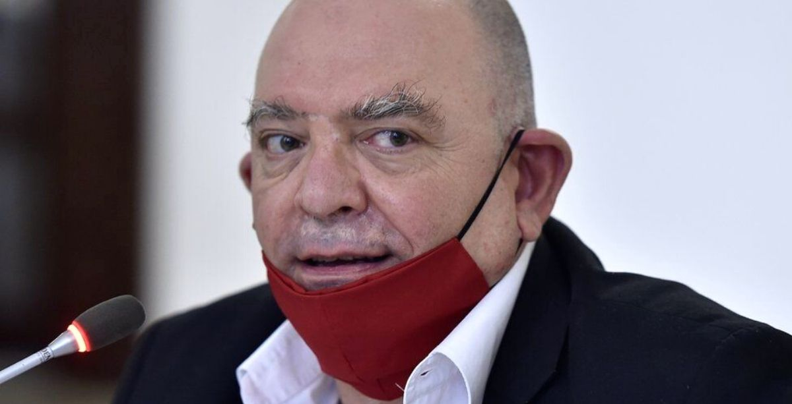
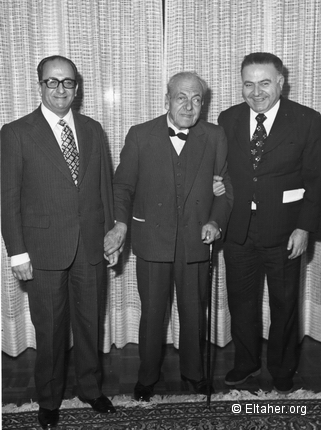
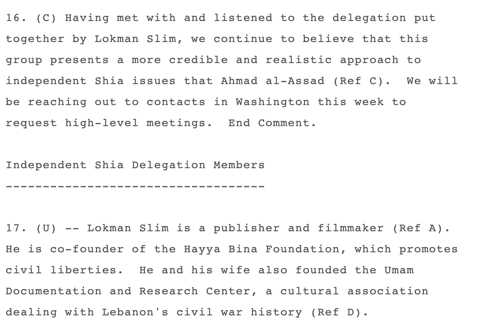
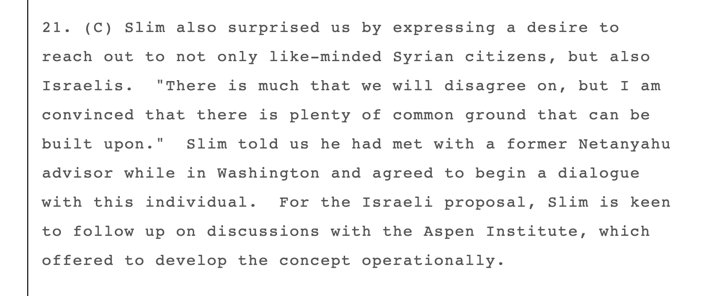
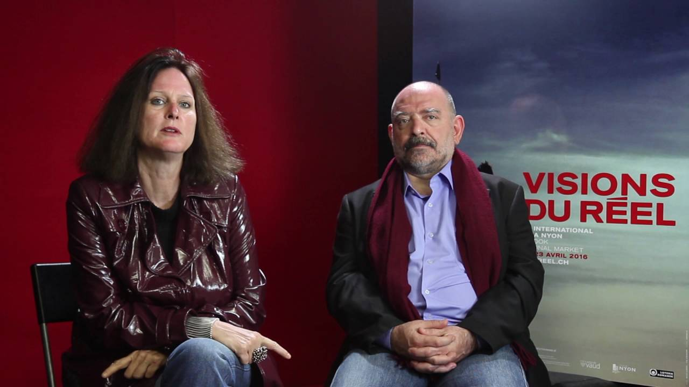
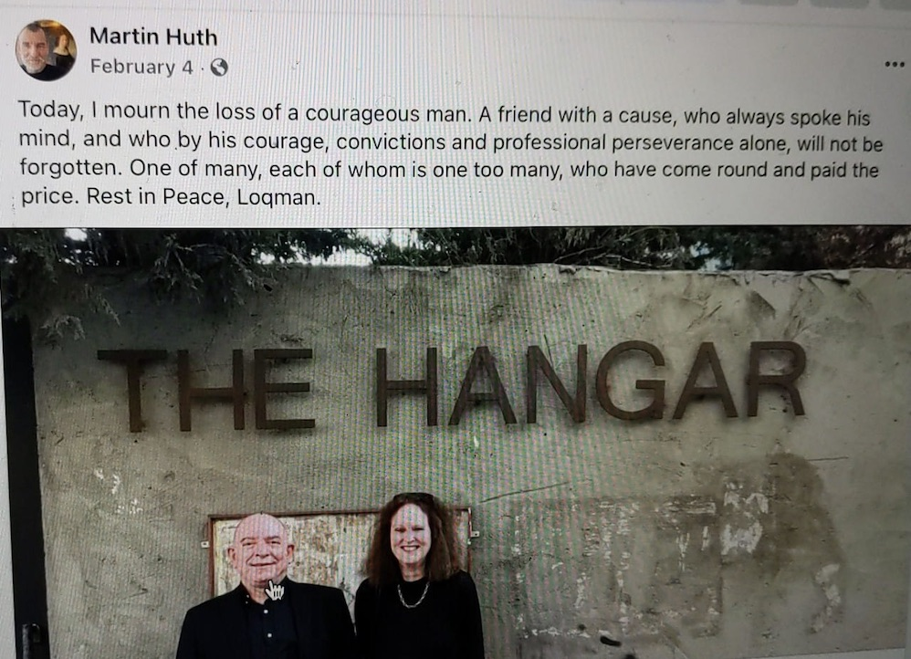
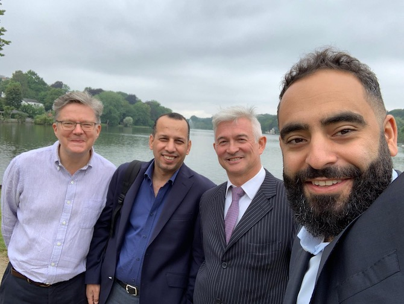
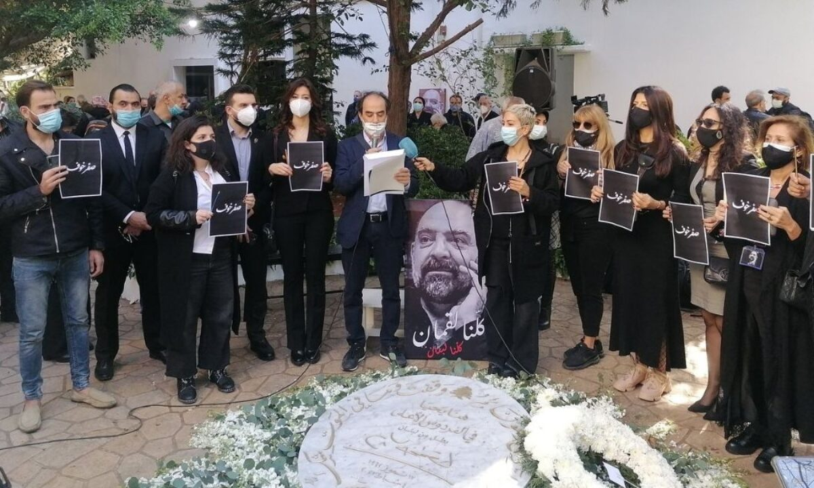
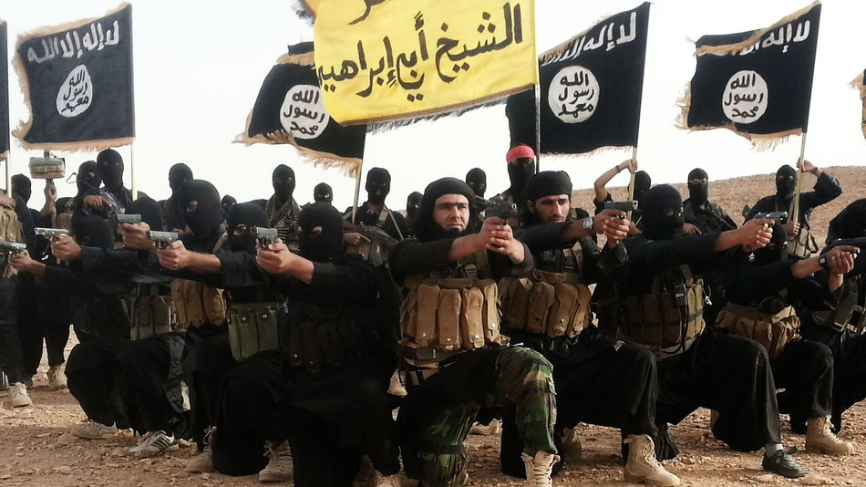
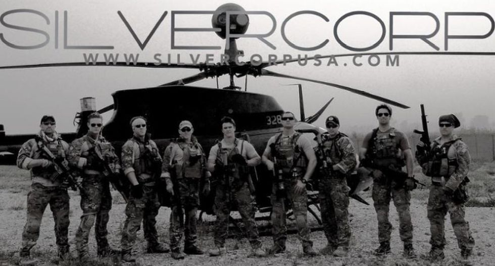
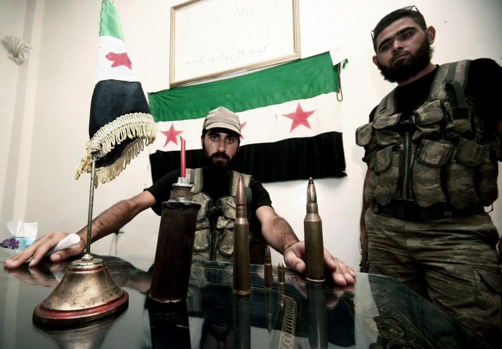
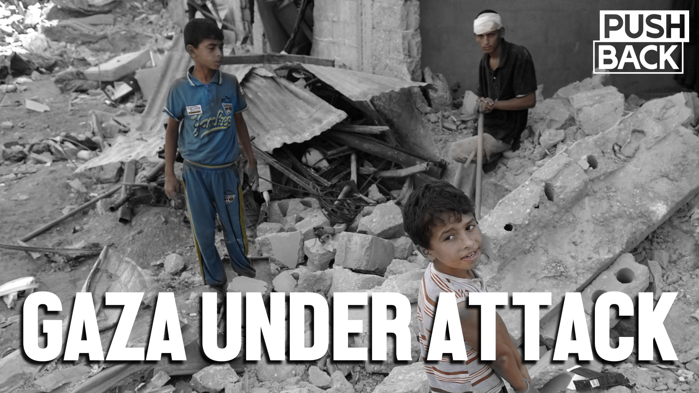
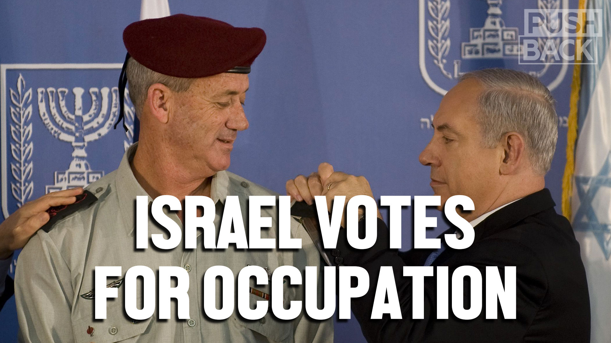
Content Date: 2021-04-06
Download Date: 2021-05-07
Document ID: L0C04AXA4